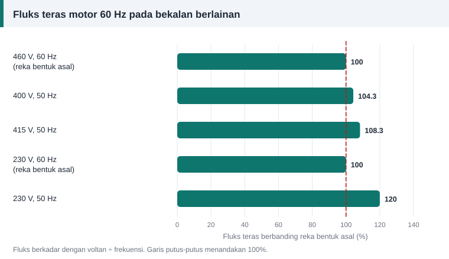

Pengiraan belitan
Motor 60 Hz pada Bekalan 50 Hz: Kesan Voltan dan Frekuensi
Mesin terpakai yang diimport dari negara berbekalan 60 Hz sering tiba dengan motor asalnya. Sama ada motor itu boleh terus digunakan pada bekalan 50 Hz bergantung pada satu nisbah.


Peraturan asas: voltan per hertz
Daripada formula lilitan, fluks berkadar dengan voltan dibahagi frekuensi:
Φ ∝ V ÷ f
Selagi nisbah V ÷ f kekal seperti reka bentuk asal, fluks teras tidak berubah.
Empat kes biasa
| Motor direka untuk | Bekalan sebenar | Fluks berbanding reka bentuk | Ulasan |
|---|---|---|---|
| 460 V, 60 Hz | 400 V, 50 Hz | 104% | Biasanya boleh diterima; laju dan kuasa turun kira-kira 17% |
| 460 V, 60 Hz | 415 V, 50 Hz | 108% | Arus pemagnetan naik; pantau suhu |
| 230 V, 60 Hz | 230 V, 50 Hz | 120% | Teras tepu; motor panas walaupun tanpa beban |
| 400 V, 50 Hz | 400 V, 60 Hz | 83% | Laju naik 20%; tork berkurang |
Mengapa 20% fluks tambahan begitu teruk
Teras direka berhampiran lutut lengkung pemagnetan. Di atas lutut itu, sedikit tambahan fluks memerlukan tambahan arus pemagnetan yang besar. Arus tanpa beban melonjak dan kehilangan besi turut naik, jadi motor panas walaupun tidak memikul beban.
Kesan lain perubahan frekuensi
- Laju berubah berkadar terus dengan frekuensi. Kipas dan pam emparan sangat peka kerana kuasanya berubah mengikut kuasa tiga laju.
- Penyejukan berkurang pada 50 Hz kerana kipas pada aci berpusing lebih perlahan.
- Kapasitor motor satu fasa mempunyai regangan yang berubah dengan frekuensi, jadi nilainya mungkin perlu disemak.
Bila perlu lilit semula
Jika nisbah V ÷ f bekalan melebihi reka bentuk lebih daripada had toleransi voltan motor, lazimnya sekitar 5% hingga 10%, belitan perlu ditukar.
N baharu = N asal × (V baharu ÷ V asal) × (f asal ÷ f baharu)
Contoh: motor 230 V 60 Hz dengan 50 lilitan setiap gegelung hendak digunakan pada 230 V 50 Hz. N baharu = 50 × 1 × 60 ÷ 50 = 60 lilitan.
Dawai mesti lebih halus supaya muat di dalam alur yang sama: luas baharu = luas asal × 50 ÷ 60. Kuasa yang boleh dihasilkan turun kepada kira-kira 83% daripada asal, kerana arus yang dibenarkan lebih kecil pada voltan yang sama.
Alternatif tanpa lilit semula
- Bekalkan motor melalui pemacu frekuensi boleh ubah yang ditetapkan mengikut voltan dan frekuensi kadaran motor.
- Turunkan voltan dengan pengubah supaya nisbah V ÷ f betul. Motor 230 V 60 Hz memerlukan kira-kira 192 V pada 50 Hz.
Bekalan di Malaysia
Voltan nominal bekalan voltan rendah di Malaysia ialah 230/400 V pada 50 Hz dengan julat +10% dan −6%, mengikut MS IEC 60038 yang ditetapkan oleh Suruhanjaya Tenaga mulai 1 Januari 2008. Ia menggantikan 240/415 V. Motor lama bertanda 415 V masih berfungsi dengan normal pada bekalan ini.
Tab "Tukar voltan" pada kalkulator menerima frekuensi asal dan baharu, lalu memberi bilangan lilitan serta saiz dawai yang sepadan.
Rujukan dan bacaan lanjut
Artikel berkaitan
Menukar Voltan Motor: Kira Lilitan dan Saiz Dawai Baharu
Sebelum melilit semula untuk voltan lain, semak sama ada sambungan semula sudah memadai. Jika tidak, dua nisbah mudah memberi bilangan lilitan dan saiz dawai baharu.
Laju Segerak, Bilangan Kutub dan Gelincir Motor
Mengapa motor 4 kutub berpusing hampir 1500 pusingan seminit? Jawapannya terletak pada frekuensi bekalan dan bilangan kutub. Lihat formula, jadual laju dan maksud gelincir.
Formula Lilitan Per Fasa: E = 4.44 f Φ N kw Dijelaskan
Satu persamaan menghubungkan voltan, frekuensi, fluks dan bilangan lilitan. Fahami asal-usul angka 4.44 dan cara menggunakannya untuk mengira lilitan per fasa motor.